Variable number of items is added to the map (number of items stored in the map is the value on X axis). Then constant number of map searches is done. Number of microseconds that test takes is the value of Y axis. Key is random uint64 value.
Comparison of tree, hash and binary search structures with up to 350 elements:
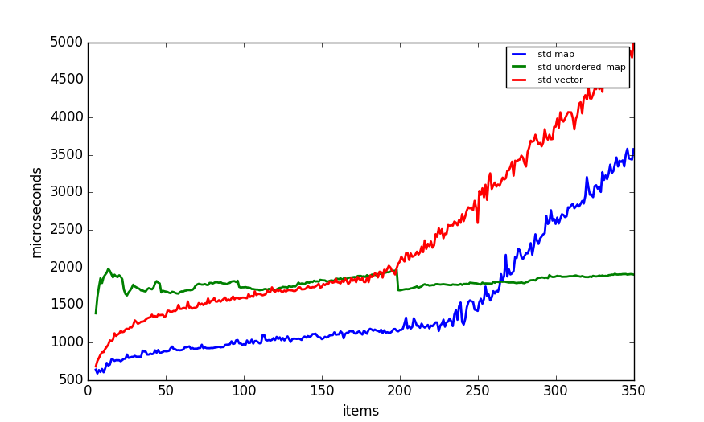
Comparison of tree, hash and binary search structures with up to 3500 elements:
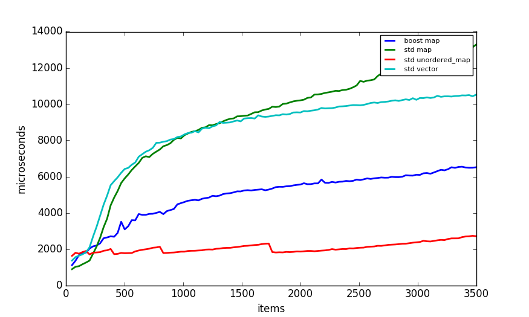
Comparison of tree, hash and binary search structures with up to 100000 elements:
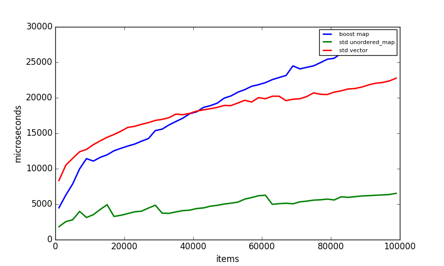
Comparison of tree structures with up to 350 elements:
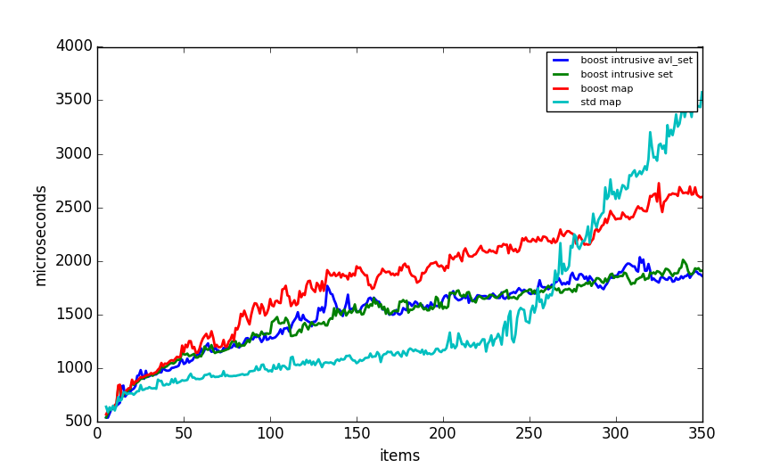
Comparison of tree structures with up to 3500 elements:
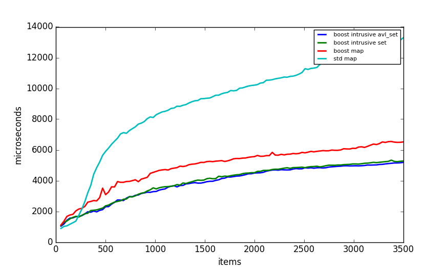
Comparison of tree structures with up to 100000 elements:
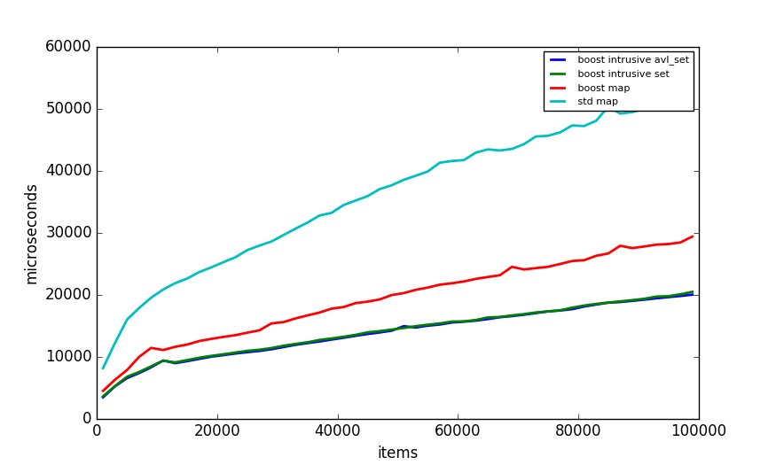
Comparison of hash table structures with up to 350 elements:
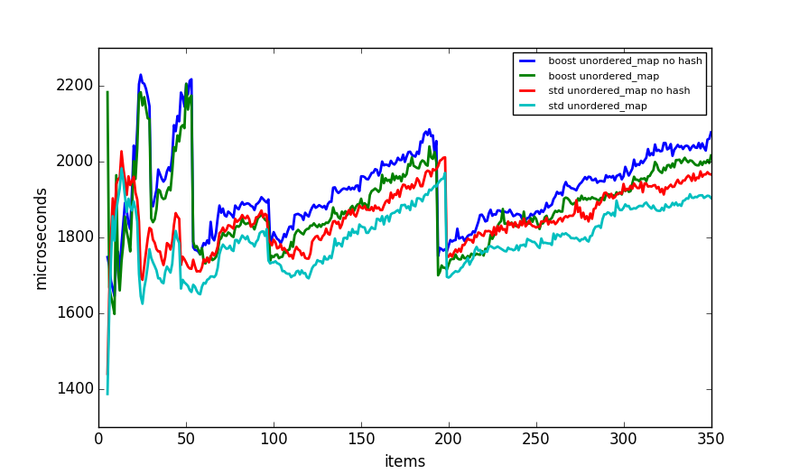
Comparison of hash table structures with up to 3500 elements:
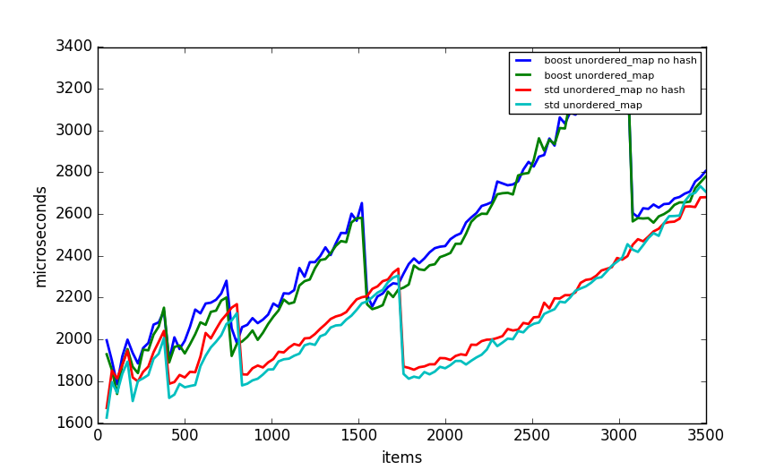
Comparison of hash table structures with up to 100000 elements:
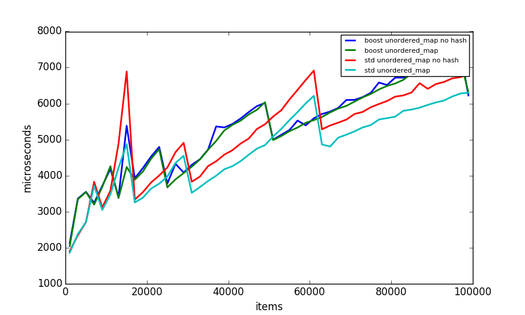
Comparison of binary search structures with up to 350 elements:
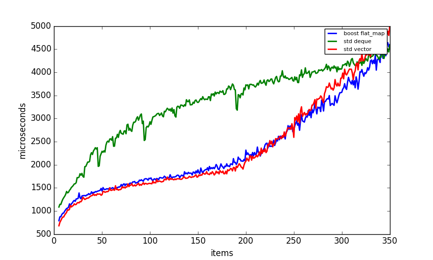
Comparison of binary search structures with up to 3500 elements:
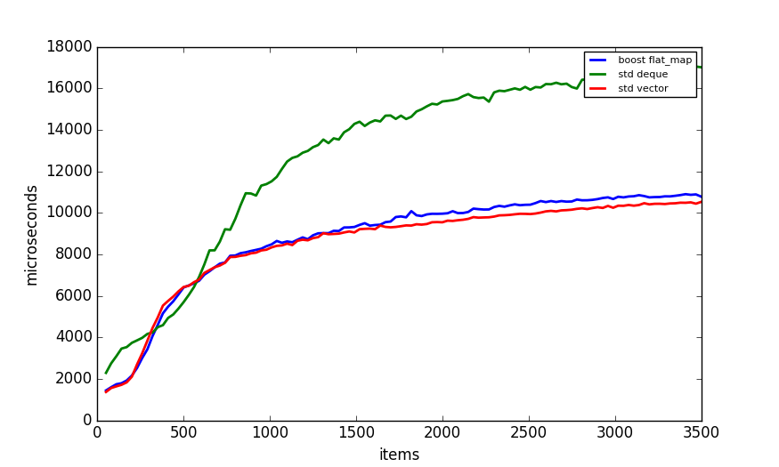
Comparison of binary search structures with up to 100000 elements:
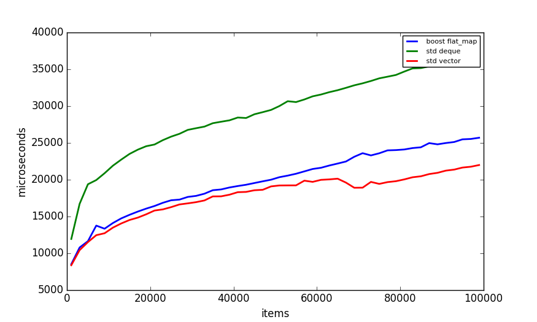